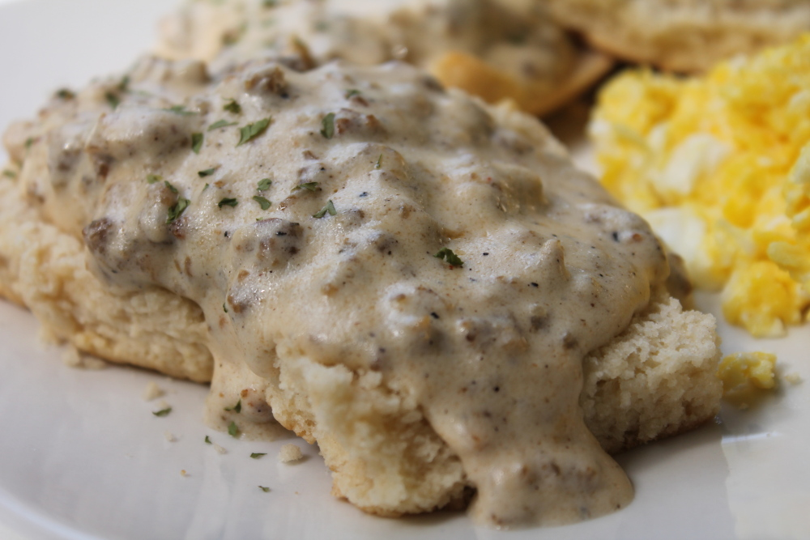

Easy Sausage Gravy and Biscuits

Description
Hot jumbo buttermilk biscuits with creamy sausage gravy are ready in just 15 minutes for a hearty, family-favorite breakfast.
Ingredients
- 1 (16 ounce) can refrigerated jumbo buttermilk biscuits
- 1 (9.6 ounce) package Jimmy Dean® Original Hearty Pork Sausage Crumbles
- ¼ cup flour
- Salt and ground black pepper to taste
Steps
-
Bake biscuits according to package directions.
-
Meanwhile, cook sausage in large skillet over medium heat 5-6 minutes or until thoroughly heated, stirring frequently. Stir in flour. Gradually add milk; cook until mixture comes to a boil and thickens, stirring constantly. Reduce heat to medium-low; simmer 2 minutes, stirring constantly. Season to taste with salt and pepper.
-
Split biscuits in half. Place 2 halves on each of 8 plates; top with about 1/3 cup gravy.